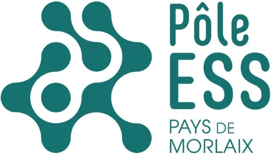
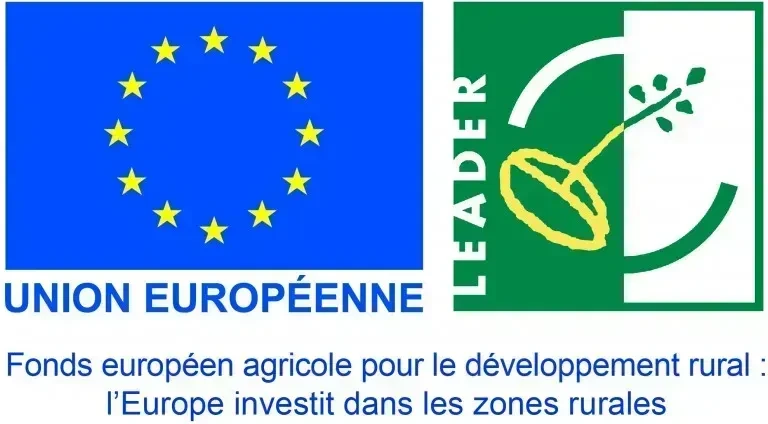

9 avril 2026
Soirée de lancement de la caisse citoyenne
Une belle soirée de lancement de la caisse.
Pour un droit fondamental et universel à une alimentation saine et durable.
7déc.
Prochain rendez-vous
Lundi 7 décembre 2026, 18 h 00 · locaux de l'AFPA, bellevue de la Madeleine, Morlaix

Le groupe « Sécurité Sociale de l'Alimentation » (SSA)
Le collectif pour une Sécurité Sociale de l'Alimentation en Pays de Morlaix est composé d'une trentaine de citoyennes et citoyens vivant sur le Pays de Morlaix. Il est accompagné par 4 structures associatives du Pays de Morlaix.

Une belle soirée de lancement de la caisse.

La liste des premiers points de vente conventionnés par les expérimentateurs et expérimentatrices.

Cette petite vidéo de 4 min synthétise l'atelier 5 du parcours citoyen.






Contactez l'association ULAMIR-CPIE.
Nous contacter